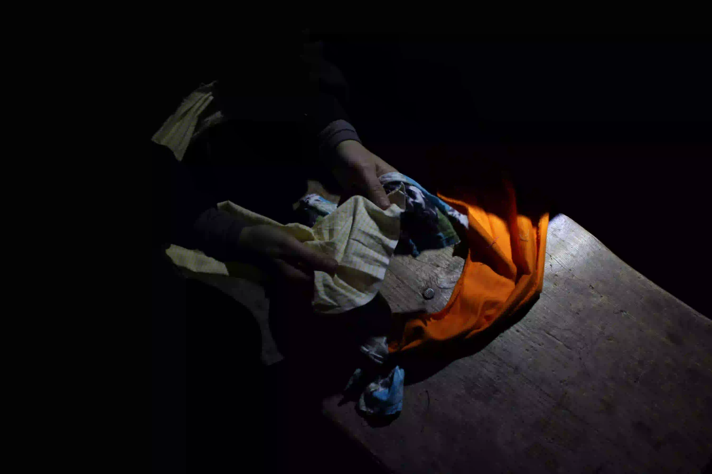
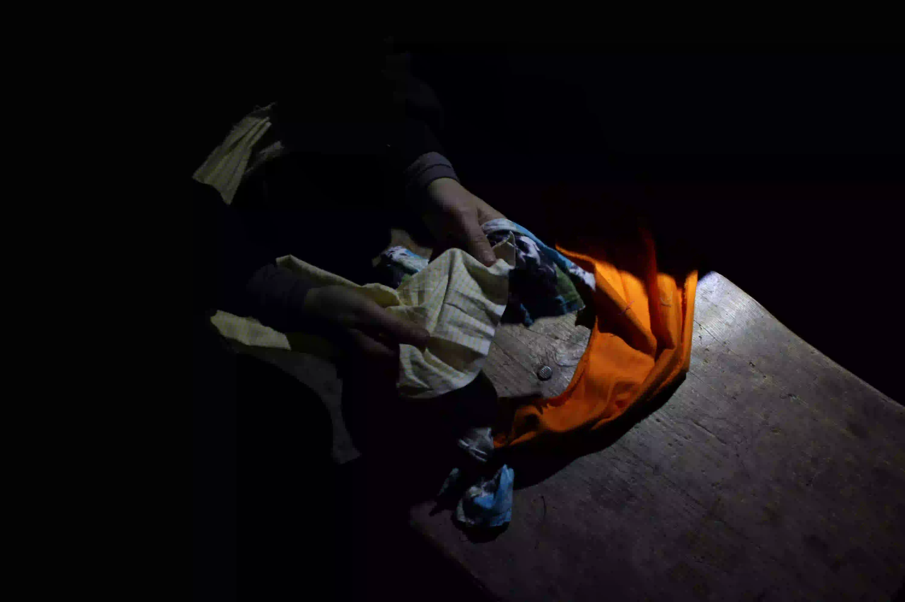

Procédé : marcher 4h de Prélenfrey à la cabane de la Fauge, puis y rester 4 jours
Ce site répertorie les expérimentations, dessins et créations réalisées puis laissées au refuge de la Fauge durant une résidence proposée par et pour des étudiants.es.
Le projet s'est déroulé dans un refuge non-gardé, c'est un espace collectif de passage, mis à disposition par la mairie ou des locaux pour des promeneurs.euses qui viennent s’y abriter, le temps d’un goûter, d’une soirée ou bien même d’une nuit
Lidée initiale du projet était de venir sur place dans les conditions d'un refuge et d'y laisser une trace ludique et étonnante à destination du prochain passant.
Le rag rng répond à un besoin et une inquiétude suite à la multiplication des coupes budgétaire dans le domaine de la culture, nous préssentons la nécessité de s'organiser en interne en construisant et en trouvant des espaces de création accessible.
Le refuge de la Fauge était une cabane très fréquenté en journée, nous avons eu du public pour nos performance, des regards lorsque nous peignons au bord de la route, et nous espérons avoir déclenché une vague de décorations au sein de la cabane.


 

Mains
Equipe de la première édition : Aldo Prost (Scénographie, ENSAD),
Roman Chaumont (Arts du métal ENSAAMA), Maïlis Leboulicaut (Performance ENSAD), Capucine Revéret (design industriel, ENSCI),
Elise Versiny Campinchi (design textile ENSAAMA), Marie Boulet (Graphisme ENSAAMA), Isaline Altisen (Scénographie ENSAD)
Bibliographie et ressources :
-le site https://www.refuges.info, répertoriant les cabanes
Principales :
- https://www.leuzeu.fr/page16.html : Le Leuzeu est un ancien maquis, qui a été retapé en un refuge non gardé immense par une association
-les grdistes : association d’entretien du gr10 dans les pyrénées
-Stalker Manifeste : manifeste d’artistes italiens qui forment des groupes de marcheurs dans les villes pour se réapproprier le territoire en friches (l’idée que le collectif se forme dans l’action de parcourir ensemble)
(-dans le même style : Women walk at midnight par Malika Taneja, mouvement féministe indien de femmes qui marchent dans les rues de la ville pour s’approprier l’espace)
-Cabane de Marielle Macé : essai qui parle du rapport à l’espace, les cabanes non pas pour fuir le monde mais pour l’habiter autrement pour l’élargir (cherche un point de liaison)
-La sagesse des lianes de Dénétèm Touam Bona : Essai poétique et historique qui parle du marronage (esclave prenant la fuite dans la forêt), rapport au refuge et à la torsion comme moyen de lutte
Secondaire :
Matériaux
-Béton, arme de construction massive du capitalisme, Anselm Jappe
-l’histoire du reflet, Serge Branly, anthologie présentant l’histoire du verre et du métal dans la société occidentale
-l’eau et les rêves, Gaston Bachelard,
-histoire d’un ruisseau, Elisée Reclus, essai sur l’esthétisme des rivières, et toute la poétique qui est inclus dedans
-La vie secrète des arbres, garde forestier qui parle des champignons qui relis les arbres entre eux
Bricolage et artisanat :
-l’art et l’artisanat, William Morris, théorise la nécessité d’être artisan de son propre environnement (Edward Carpenter, refuge Lavender Hill)
Lien entre pensée collective et rythme
-Penser avec le punk, Catherine Guesde, essai sur le larsen et le déchet musicale qui lance une vague de collectif
-Richard III, par Vincent MC Cain, pièce de théâtre où le spectateur vient danser sur scène dans la boue, la musique est très forte, il y a de la fumée cet inconfort provoque un engagement du public dans la pièce
-Do You know this Song, Malika Taneja, spectacle de Théâtre participative, toute la pièce est en indien et anglais pourtant des francophones la comprenne quand même par le chant.